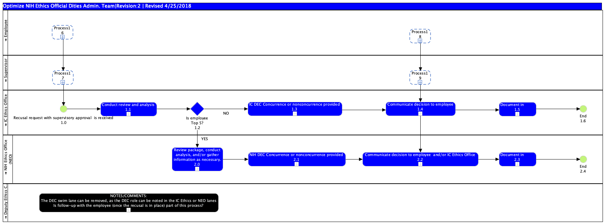

Publishing Project
Project Link
Page URL
with Name
Business Process Diagram - Recusal Process
link
Jump to:
Please select a model element
Optimize NIH Ethics Official Dities Admin. Team|Revision:2 | Revised 4/25/2018 : Freehand Shape
NOTES/COMMENTS: The DEC swim lane can be removed, as the DEC role can be noted in the IC Ethics or NEO lanes Is follow-up with the employee (once the recusal is in place) part of this process? : Sub-Process
Process19 : Sub-Process
Process18 : Sub-Process
Process17 : Sub-Process
Process16 : Sub-Process
Is employee Top 5? 1.2 : Gateway
End 2.4 : Start Event
Document in EMIS 2.3 : Sub-Process
Communicate decision to employee and/or IC Ethics Office 2.2 : Sub-Process
NIH DEC Concurrence or nonconcurrence provided 2.1 : Sub-Process
Communicate decision to employee 1.4 : Sub-Process
IC DEC Concurrence or nonconcurrence provided 1.3 : Sub-Process
Review package, conduct analysis, and/or gather information as necessary. 2.0 : Sub-Process
Conduct review and analysis 1.1 : Sub-Process
Document in EMIS 1.5 : Sub-Process
End 1.6 : Start Event
Recusal request with supervisory approval is received 1.0 : Start Event
NIH Ethics Office (NEO) : Pool
Deputy Ethics Counselor (DEC) : Pool
Supervisor : Pool
Employee : Pool
IC Ethics Office : Pool

Model Elements
ID
Name
Description
Optimize NIH Ethics Official Dities Admin. Team|Revision:2 | Revised 4/25/2018 : Freehand Shape
NOTES/COMMENTS: The DEC swim lane can be removed, as the DEC role can be noted in the IC Ethics or NEO lanes Is follow-up with the employee (once the recusal is in place) part of this process? : Sub-Process
Process19 : Sub-Process
Process18 : Sub-Process
Process17 : Sub-Process
Process16 : Sub-Process
Is employee Top 5? 1.2 : Data-Based Exclusive Decision/Merge (XOR)
End 2.4 : Start Event
Document in EMIS 2.3 : Sub-Process
Communicate decision to employee and/or IC Ethics Office 2.2 : Sub-Process
NIH DEC Concurrence or nonconcurrence provided 2.1 : Sub-Process
Communicate decision to employee 1.4 : Sub-Process
IC DEC Concurrence or nonconcurrence provided 1.3 : Sub-Process
Review package, conduct analysis, and/or gather information as necessary. 2.0 : Sub-Process
Conduct review and analysis 1.1 : Sub-Process
Document in EMIS 1.5 : Sub-Process
End 1.6 : Start Event
Recusal request with supervisory approval is received 1.0 : Start Event
NIH Ethics Office (NEO) : Pool
Deputy Ethics Counselor (DEC) : Pool
Supervisor : Pool
Employee : Pool
IC Ethics Office : Pool
Publishing Project